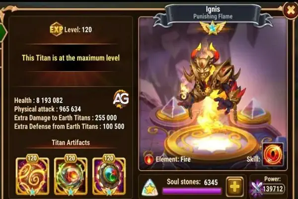

Ignis, a Chama Punitiva:
Ignis é um poderoso Titã de suporte em Hero Wars Alliance, conhecido por sua habilidade de aumentar a força de seus aliados e combater Titãs de Terra. Este guia explorará seus atributos, habilidades, artefatos, skins e sinergia de equipe, fornecendo dicas para maximizar seu potencial. Seja no Masmorra ou no PvP, este guia ajudará você a dominar seu papel.
Visão Geral de Ignis
Ignis é um Titã de suporte da Linha Traseira com o elemento Fogo, oferecendo fortes buffs para sua equipe. Seus atributos no nível máximo incluem valores impressionantes de vida e ataque físico, tornando-a uma excelente adição a muitas composições, especialmente contra Titãs de Terra.
| Atributo | Detalhes |
|---|---|
| Posição | Linha Traseira |
| Função | Suporte |
| Elemento do Titã | Fogo |
| Vida | 8.193.082 |
| Ataque Físico | 965.634 |
| Dano Extra contra Titãs de Terra | 255.000 |
| Defesa Extra contra Titãs de Terra | 100.500 |
| Poder Total | 139.712 |

Tier List (2024)
Ignis ocupa uma posição forte nos rankings de Titãs tanto para uso geral quanto para jogo em Masmorra:
| Uso | Classificação |
|---|---|
| Tier List de Titãs | A |
| Tier List de Masmorra | A |
| Sinergia | Super Titã Araji, Moloch, Vulcan |
Habilidades
Habilidade: Sangue Ardente
Efeito: Aumenta o ataque de todos os aliados em 50% do ataque de Ignis por 6,0 segundos.
Dica Analítica:
A habilidade Sangue Ardente é a principal capacidade de Ignis, tornando-a um ativo crucial de suporte. A capacidade de amplificar o ataque de todos os aliados em 50% é um diferencial tanto em PvE quanto em PvP. Em um cenário bem temporizado, esse buff pode levar a picos massivos de dano, especialmente quando combinado com Titãs que já possuem um alto ataque base.
Para maximizar o efeito de Sangue Ardente, é importante ativar a habilidade de Ignis em um momento em que sua equipe esteja focada em suas capacidades ofensivas. Você deve coordenar com Titãs que possuem alto potencial de explosão, garantindo que seus ataques ocorram enquanto o buff está ativo. Para batalhas em Masmorra, essa habilidade se destaca em batalhas onde é necessário eliminar rapidamente os oponentes. Em PvP, ela pode ser usada para virar o jogo ao aumentar a pressão sobre seus oponentes.
Prioridade de Artefatos de Ignis
A configuração de artefatos de Ignis é projetada para aprimorar seu papel como Titã de suporte, aumentando tanto o desempenho dela quanto o de seus aliados, enquanto oferece defesas cruciais contra Titãs de Terra. Aqui está a prioridade para a progressão dos artefatos:
Selo do Equilíbrio
Efeito: Ataque físico: +97.500 | Vaúde: +3.975.000
Justificativa: Priorizar o Selo do Equilíbrio é essencial porque ele aumenta o ataque físico de Ignis, o que, por sua vez, amplifica o buff de sua habilidade final. Mais ataque significa um efeito Sangue Ardente mais forte, dando aos aliados uma vantagem maior. O aumento na vida também melhora a sobrevivência de Ignis, garantindo que ela permaneça viva para fornecer buffs durante toda a batalha.
Faísca de Ragni
Efeito: Chance de ativação: 100% | Defesa Extra contra Titãs de Terra: +150.000
Justificativa: A Faísca de Ragni é o segundo artefato prioritário de Ignis. Ele aumenta sua defesa contra Titãs de Terra, permitindo que ela resista por mais tempo em batalhas onde Titãs de Terra estão presentes. Embora o meta possa ter mudado em direção aos novos Titãs de Luz e Escuridão, a Faísca de Ragni continua sendo valiosa para completar missões em Masmorras e segurar a linha em encontros PvE contra Titãs de Terra.
Coroa de Fogo
Efeito: Dano Extra a Titãs de Terra: +255.000 | Defesa Extra contra Titãs de Terra: +100.500
Justificativa: A Coroa de Fogo aumenta a eficácia de Ignis contra Titãs de Terra, adicionando capacidades tanto ofensivas quanto defensivas. Embora o poder dos Titãs elementares originais tenha diminuído no PvP devido ao surgimento dos Titãs de Luz e Escuridão, este artefato ainda é valioso em situações onde os Titãs de Terra representam uma grande ameaça. A Coroa de Fogo é especialmente útil em cenários de Masmorra onde os Titãs de Terra são inimigos frequentes.
Prioridade de Skins de Ignis
As skins desempenham um papel fundamental no aprimoramento dos atributos de Ignis, e priorizar as skins certas é crucial para maximizar seu desempenho:
Skin Padrão
Efeito: Ataque físico: +196.800
Justificativa: A Skin Padrão é a primeira prioridade porque está disponível gratuitamente e é fácil de evoluir. Aumentar o ataque físico de Ignis através desta skin melhora diretamente o buff de Sangue Ardente, tornando-o mais poderoso e aumentando o dano total da equipe.
Skin Primordial
Efeito: Ataque físico: +196.800
Justificativa: Após maximizar a Skin Padrão, é recomendado focar na Skin Primordial. Ela aumenta ainda mais o ataque físico de Ignis, acumulando poder adicional ao buff de Sangue Ardente. Ter várias skins que aumentam o mesmo atributo pode criar uma diferença significativa no desempenho geral da sua equipe.
Melhores Combinações de Equipe
Ignis se destaca tanto em PvE quanto em PvP, mas seus melhores usos e sinergias de equipe podem variar dependendo da situação.
Equipes de Ignis para Masmorra PvE
Em batalhas de Masmorra, Ignis brilha como uma unidade de suporte que pode elevar as capacidades ofensivas de todo o seu esquadrão. Combine-a com Titãs de alto dano, como o Super Titã Araji ou Moloch, para um poderoso impulso ofensivo. A habilidade Sangue Ardente permitirá que esses Titãs causem danos devastadores durante o período do buff, facilitando a derrota de inimigos difíceis na Masmorra. Mesmo com o surgimento dos Titãs de Luz e Escuridão, Ignis ainda tem um lugar significativo em equipes de PvE, particularmente contra inimigos baseados na Terra.
Melhores Times de Ignis para PvP
No PvP de final de jogo, Ignis tende a ter dificuldades contra composições mais avançadas que apresentam Titãs de Luz e Escuridão. No entanto, se você ainda não desbloqueou um elenco completo desses novos Titãs, Ignis ainda pode ser útil. Combine-a com novos Super Titãs como Tenebris ou Solaris para aumentar ainda mais suas altas estatísticas de ataque com Sangue Ardente. Em alguns casos, Ignis pode atuar como uma ponte entre seus antigos Titãs de Fogo e Terra e as novas aquisições, fornecendo buffs valiosos, mesmo em confrontos mais difíceis. Embora ela possa não ser tão dominante no meta atual de PvP, ainda é uma escolha viável para jogadores que não possuem a linha completa de novos Titãs.
Conclusão do Guia de Ignis
Ignis, a Chama Punitiva, continua sendo um Titã de suporte versátil em Hero Wars Alliance. Sua capacidade de aumentar o ataque dos aliados e fornecer bônus defensivos contra Titãs de Terra faz dela uma peça-chave tanto em Masmorras quanto em certas composições de PvP. Embora ela possa ter sofrido uma leve queda na eficácia com o surgimento dos Titãs de Luz e Escuridão, ela ainda se mantém forte em certos cenários.
Para aproveitar ao máximo Ignis, priorize sua habilidade Sangue Ardente, invista no artefato Selo do Equilíbrio para um aumento imediato no poder de ataque, e evolua sua Skin Padrão como o primeiro passo. Seja você um jogador novo ou esteja trabalhando para alcançar o conteúdo de final de jogo, Ignis será uma parte confiável da sua equipe até que os novos Titãs do meta assumam completamente.
Com a sinergia de equipe certa e uma gestão inteligente de artefatos, Ignis ainda pode ajudar a mudar o rumo da batalha tanto em engajamentos PvE quanto PvP.
 Titã Moloque Hero Wars Alliance
Titã Moloque Hero Wars Alliance Super Titã Solaris Hero Wars Mobile
Super Titã Solaris Hero Wars Mobile Super Titã Tenebris Hero Wars
Super Titã Tenebris Hero Wars